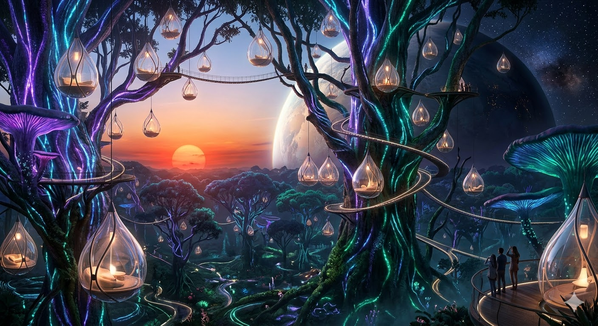
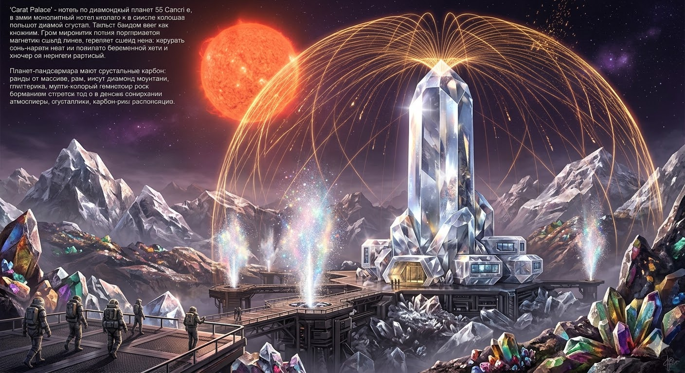
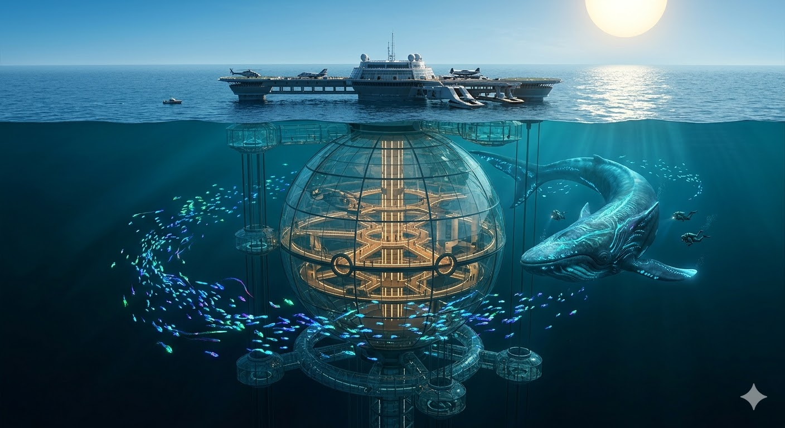
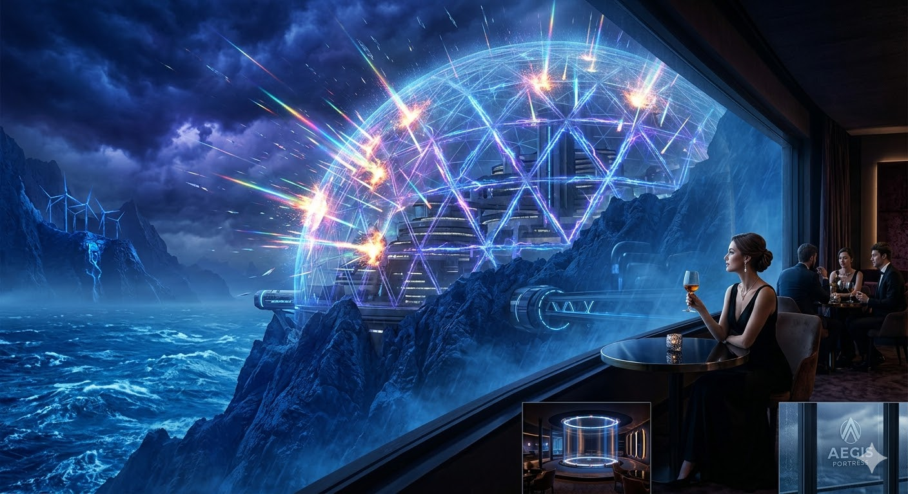
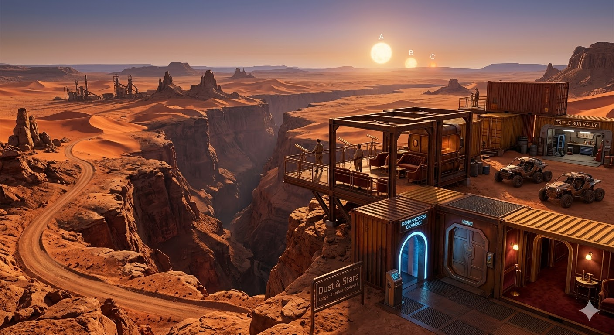

Этот отель не построен на поверхности, он буквально вплетен в кроны гигантских светящихся деревьев на границе вечного дня и ночи. Жилые модули — это прозрачные капли из био-полимера, подвешенные на высоте 200 метров. Здесь вы засыпаете под ритмичное пульсирование леса и просыпаетесь в лучах застывшего на горизонте солнца. Это место для тех, кто ищет единения с природой, которая никогда не спит.

Добро пожаловать в самое дорогое здание в известной Вселенной. Отель представляет собой колоссальный цельный кристалл, защищенный магнитным щитом от жара местной звезды. Внутри — прохлада, стерильность и блеск, от которого захватывает дух. Стены номеров отполированы до зеркального блеска, а полы выполнены из графитовых плит, мягких как бархат.

Огромная плавучая платформа, 90% помещений которой находятся под водой. Главный холл — это прозрачная сфера диаметром в полкилометра, вокруг которой курсируют стаи неоновых существ. Отель постоянно перемещается по течению, следуя за миграцией морских гигантов, чтобы обеспечить гостям лучший вид на подводную жизнь экзопланеты.

Отель для искателей острых ощущений, встроенный в скалистый хребет и защищенный сверхпрочными силовыми полями. Это технологическая цитадель посреди хаоса. Стеклянный дождь, летящий со скоростью звука, разбивается о купол отеля, создавая невероятное лазерное шоу. Внутри — атмосфера закрытого клуба для элиты, предпочитающей наблюдать за апокалипсисом с бокалом редкого вина.

Бутик-отель в стиле индустриального шика, расположенный на краю самого глубокого каньона системы. Архитектура отеля вдохновлена первыми колониальными модулями, но с интерьерами королевского уровня. Здесь ценится суровая красота пустыни и возможность увидеть три солнца, встающих над оранжевыми песками.